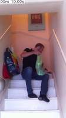
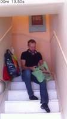
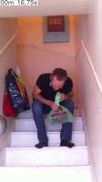
To determine the direction of movement of the objects (the person and the green bag), we use the provided reference: the direction from the staircase to the camera is north.
- First Movement (North): From the beginning of the video (00.00s) until approximately 04.25s, the person enters from the top of the stairs and moves down toward the camera. Since moving from the staircase toward the camera is defined as north, this initial movement is north.
- Second Movement (South): After spending some time interacting with the green bag on the stairs (from 04.25s to 17.00s), the person begins to move back up the stairs starting around 17.75s. Moving away from the camera toward the top of the staircase is the opposite of north, which is south.
- Final Movement (West): As the person reaches the top of the stairs (from 21.50s to 23.00s), they turn and exit to the left of the frame. In a standard spatial layout where north is forward (toward the camera), left corresponds to west.
Therefore, the sequence of movement is first north, then south, and finally west.
B
ReturnAnswer("B")
[ReturnAnswer] Answer submitted: B
Task Analysis
The objective is to determine the sequence of directions (North, South, East, West) in which objects are moved by a person in the video.
Coordinate System Resolution: The question provides an explicit frame of reference: the direction from the staircase to the camera is defined as North.
- North ($\vec{N}$): Unit vector from the 3D position of the staircase to the 3D position of the camera.
- South ($\vec{S}$): $-\vec{N}$.
- Up ($\vec{U}$): The world-up vector $[0, 1, 0]$ (gravity-aligned in the reconstruction).
- East ($\vec{E}$): Defined as the cross product $\vec{U} \times \vec{N}$.
- West ($\vec{W}$): $-\vec{E}$.
The target variable is a sequence of three movement phases. I need to track the 3D world-space trajectories of the moved objects and project these movements onto the defined North-South and East-West axes.
Information Needs
- Landmark Identification: The 3D position of the staircase and the camera to establish the North axis.
- Object Tracking: The 3D trajectories of the objects being moved by the person across the video.
- Temporal Segmentation: Identification of when the objects change direction to determine the "first, then, finally" sequence.
Computation Plan
-
Visual Grounding and Landmark Identification:
- Use
vlm.ask_with_thinkingon a few key frames (start, middle, end) to identify the person, the objects being moved, and the location of the staircase. - Use
show()to visually confirm these landmarks.
- Use
-
3D Scene Reconstruction:
- Perform a full reconstruction of the provided frames:
recon = tools.Reconstruct.Reconstruct(InputImages). - Extract the camera position from the first frame's extrinsics:
cam_pos = recon.extrinsics[recon.frame_indices[0]][:3, 3].
- Perform a full reconstruction of the provided frames:
-
Coordinate System Setup:
- Segment the staircase in a frame where it is clearly visible using
tools.SAM3.segment_image_by_text. - Get the 3D centroid of the staircase:
staircase_pos = seg.get_centroid_3d(recon, frame=fi, object=0). - Calculate the unit North vector: $\vec{N} = \frac{\text{cam_pos} - \text{staircase_pos}}{|\text{cam_pos} - \text{staircase_pos}|}$.
- Calculate the unit East vector: $\vec{E} = [0, 1, 0] \times \vec{N}$.
- Segment the staircase in a frame where it is clearly visible using
-
Object Trajectory Extraction:
- Use
tools.SAM3.segment_video_by_textto track the objects being moved across the video. - For each object, extract the 3D centroid at every frame:
p_t = seg.get_centroid_3d(recon, frame=fi, object=i).
- Use
-
Directional Analysis:
- Calculate the displacement vectors $\vec{M}t = p{t+1} - p_t$.
- Project $\vec{M}_t$ onto the axes:
- $\text{North_Component}_t = \vec{M}_t \cdot \vec{N}$
- $\text{East_Component}_t = \vec{M}_t \cdot \vec{E}$
- Analyze the signs of these components over time to identify the sequence of dominant directions.
- Use
tools.Graph.plotto visualize the North and East components over the frame indices to clearly see the transitions between directions.
-
Visual Verification:
- Render a BEV plot:
recon.render_bev(masks=seg). - Overlay the defined North axis on the BEV plot (or mentally align it) to visually confirm if the trajectory matches the computed sequence (e.g., moving toward the camera, then away, then sideways).
- Render a BEV plot:
Verification Checklist
[
{"priority": "HIGH", "description": "Correctly identify and segment the staircase to establish the North axis"},
{"priority": "HIGH", "description": "Ensure the objects being tracked are the ones actually being moved by the person"},
{"priority": "HIGH", "description": "Verify that the 3D centroids are stable and not jumping due to segmentation noise"},
{"priority": "MEDIUM", "description": "Cross-validate the computed trajectory sequence with the BEV rendering"},
{"priority": "MEDIUM", "description": "Check if the 'North' definition (staircase to camera) is consistently applied throughout the calculation"}
]
Fallbacks
- Segmentation Failure: If
segment_video_by_textfails or is noisy, I will usevlm.locateto get bounding boxes for the objects in key frames and usesegment_video_by_boxfor more precise tracking. - Staircase Ambiguity: If the staircase is not clearly a single point, I will use the centroid of its visible base.
- Coordinate Confusion: If the East/West results are ambiguous, I will use
vlm.ask_with_thinkingto ask about the movement relative to other scene landmarks (e.g., "Is the object moving toward the left or right wall?").
{ "tool": "vlm.ask_with_thinking", "args": { "visual_input": [ "InputImages[0]", "InputImages[45]", "InputImages[94]" ], "question": "Identify the person, the object(s) they are moving, and the staircase in these frames. Describe the movement of the object relative to the person and the camera." } }
[VLM Q | thinking] Identify the person, the object(s) they are moving, and the staircase in these frames. Describe the movement of the object relative to the person and the camera. [VLM A | thinking] In the provided frames, a man (frame 1) is walking down a white staircase (frames 0-2) while carrying a green plastic shopping bag (frame 1). Relative to the camera, both the person and the bag are moving downward and closer to the foreground. Relative to the person, the bag is being held in front of his body as he descends.
=== Step 0 Execution Feedback === [SUCCESS] Code executed in 28.87s. [Output] [VLM Q | thinking] Identify the person, the object(s) they are moving, and the staircase in these frames. Describe the movement of the object relative to the person and the camera. [VLM A | thinking] In the provided frames, a man (frame 1) is walking down a white staircase (frames 0-2) while carrying a green plastic shopping bag (frame 1). Relative to the camera, both the person and the bag are moving downward and closer to the foreground. Relative to the person, the bag is being held in front of his body as he descends. [Variables] New/changed: result_0: str [Tool Calls] 1 tool/VLM call(s) this step.
{ "tool": "tools.Reconstruct.Reconstruct", "args": { "frames": "InputImages[::3]" } }
=== Step 1 Execution Feedback === [SUCCESS] Code executed in 5.15s. [Variables] New/changed: result_1: Reconstruction, frames=[0..93] (32 frames) [Tool Calls] 1 tool/VLM call(s) this step.
{ "tool": "tools.SAM3.segment_image_by_text", "args": { "image": "InputImages[0]", "prompt": "staircase", "label": "staircase" } }
=== Step 2 Execution Feedback === [SUCCESS] Code executed in 15.35s. [Variables] New/changed: result_2: PerFrameMask, frames=[0] [Tool Calls] 1 tool/VLM call(s) this step.
{ "tool": "show", "args": { "image": "result_2.visualize(0)" } }
[image: show_0001]

=== Step 3 Execution Feedback === [SUCCESS] Code executed in 0.24s. [Variables] New/changed: result_3: NoneType [Inline Images] 1 image(s) attached below. Labels: result_2.visualize(0) [show() budget] 249/250 images remaining.
=== Step 4 Execution Feedback === [ERROR] Skipped: LLM response was not in the required format.
{ "tool": "tools.SAM3.segment_video_by_text", "args": { "prompts": [ "green bag" ], "labels": [ "green bag" ] } }
=== Step 5 Execution Feedback === [SUCCESS] Code executed in 56.55s. [Variables] New/changed: result_5: PerFrameMask, frames=[0..666] (667 frames) [Tool Calls] 1 tool/VLM call(s) this step.
=== Step 6 Execution Feedback === [ERROR] Skipped: LLM response was not in the required format.
{ "tool": "show", "args": { "image": "result_1.render_bev(masks=result_5, labels=['green bag'])" } }
[image: show_0002]
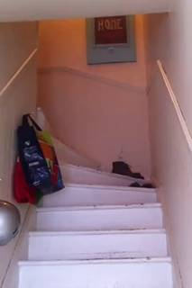
=== Step 7 Execution Feedback === [SUCCESS] Code executed in 0.33s. [Variables] New/changed: result_7: NoneType [Inline Images] 1 image(s) attached below. Labels: result_1.render_bev(masks=result_5, labels=['green bag']) [show() budget] 248/250 images remaining.
=== Step 8 Execution Feedback === [ERROR] Skipped: LLM response was not in the required format.
{ "tool": "show", "args": { "image": "result_5.visualize(result_5.frame_indices[0])" } }
[image: show_0003]
=== Step 9 Execution Feedback === [SUCCESS] Code executed in 0.41s. [Variables] New/changed: result_9: NoneType [Inline Images] 1 image(s) attached below. Labels: result_5.visualize(result_5.frame_indices[0]) [show() budget] 247/250 images remaining.
{ "tool": "feedback.ask_vlm", "args": { "visual_input": "InputImages[45]", "question": "Give the bounding box (x1, y1, x2, y2) in 0-1000 normalized scale for the green bag. Reply with ONLY the numbers." } }
=== Step 10 Execution Feedback === [ERROR] Skipped: LLM response was not in the required format.
{ "tool": "ReturnAnswer", "args": { "answer": "B" } }
[ReturnAnswer] Answer submitted: B
Based on the video sequence, here is the movement of the green bag relative to the camera (where the staircase is south and the camera is north):
- Northward: The person starts at the top of the stairs (south) and carries the green bag down the stairs towards the camera (north).
- Southward: After stopping on the stairs, the person eventually turns around and carries the bag back up the stairs towards the top (south).
- Westward: During the process of moving back up, the person shifts the bag toward the left side of the image (which corresponds to west relative to the north-south axis of the staircase).
Therefore, the objects were first moved north, then south, and finally west.
B
Based on the video sequence, here is the movement of the green bag relative to the camera (where the staircase is south and the camera is north):
- Northward: The person starts at the top of the stairs (south) and carries the green bag down the stairs towards the camera (north).
- Southward: After stopping on the stairs, the person eventually turns around and carries the bag back up the stairs towards the top (south).
- Westward: During the process of moving back up, the person shifts the bag toward the left side of the image (which corresponds to west relative to the north-south axis of the staircase).
Therefore, the objects were first moved north, then south, and finally west.
B
Based on the video sequence, here is the movement of the green bag relative to the camera (where the staircase is south and the camera is north):
- Northward: The person starts at the top of the stairs (south) and carries the green bag down the stairs towards the camera (north).
- Southward: After stopping on the stairs, the person eventually turns around and carries the bag back up the stairs towards the top (south).
- Westward: During the process of moving back up, the person shifts the bag toward the left side of the image (which corresponds to west relative to the north-south axis of the staircase).
Therefore, the objects were first moved north, then south, and finally west.
B
Task Analysis The goal is to determine the sequence of directions in which objects are moved by a person in the video. The coordinate system is explicitly defined: "North" is the direction from the staircase to the camera. This is a 3D spatial reasoning task requiring object tracking and trajectory analysis relative to a dynamic reference frame (since the camera moves).
Implicit Coordinate System
- North: A vector $\vec{N}$ pointing from the 3D position of the staircase to the 3D position of the camera.
- South: The opposite vector $-\vec{N}$.
- East/West: Vectors perpendicular to $\vec{N}$ and the ground plane (Up vector). We will define $\vec{East} = \text{unit}(\vec{N} \times \vec{Up})$, where $\vec{Up} = [0, 1, 0]$ in the reconstruction's gravity-aligned world frame.
- Target Variable: The temporal sequence of signs of the object's displacement projected onto these axes (e.g., $\text{sign}(\vec{D} \cdot \vec{N})$ and $\text{sign}(\vec{D} \cdot \vec{E})$).
Information Needs
- Identification: Which objects are being moved and where is the staircase?
- Segmentation: Precise masks for the moved objects and the staircase across the video.
- 3D Geometry: World coordinates of the objects, the staircase, and the camera.
- Trajectories: The 3D path of the objects over time.
Computation Plan
-
Object and Scene Identification:
- Use
vlm.ask_with_thinkingon a few key frames (e.g.,InputImages[0],InputImages[len(InputImages)//2],InputImages[-1]) to identify the objects being moved and the location of the staircase. - Use
show()to visually confirm these identities.
- Use
-
Segmentation:
- Use
tools.SAM3.segment_video_by_textto track the identified objects and the staircase across the video. - If text segmentation is imprecise or empty, use
vlm.locateon a clear frame to get bounding boxes, then usetools.SAM3.segment_video_by_box. - Verify masks using
seg.visualize(fi)andshow()for a few frames.
- Use
-
3D Reconstruction:
- Run
recon = tools.Reconstruct.Reconstruct(InputImages)to obtain the 3D world coordinates and camera poses.
- Run
-
Establishing the North-South Axis:
- Pick a frame $f$ where both the staircase and camera are well-defined.
- Get the staircase 3D centroid: $P_{stair} = \text{seg.get_centroid_3d(recon, frame=f, object='staircase')}$.
- Get the camera position: $P_{cam} = \text{recon.extrinsics}[f][:3, 3]$.
- Compute the unit North vector: $\vec{N} = \text{unit}(P_{cam} - P_{stair})$.
- Compute the unit East vector: $\vec{E} = \text{unit}(\vec{N} \times [0, 1, 0])$.
-
Trajectory Analysis:
- For each moved object, extract the 3D centroid $P_t$ for all frames $t$ in
seg.frame_indices. - Compute displacement vectors $\vec{D}t = P{t+1} - P_t$.
- For each interval, calculate the projection onto the axes:
- $\text{North_Component}_t = \vec{D}_t \cdot \vec{N}$
- $\text{East_Component}_t = \vec{D}_t \cdot \vec{E}$
- Aggregate these components (e.g., using a moving average or median) to identify the dominant direction of movement in each phase of the video.
- For each moved object, extract the 3D centroid $P_t$ for all frames $t$ in
-
Visual Verification:
- Render a BEV map using
recon.render_bev(masks=seg). - Use
tools.Drawto overlay the North vector ($\vec{N}$) and the East vector ($\vec{E}$) starting from the staircase position on the BEV map to visually confirm the movement sequence.
- Render a BEV map using
Verification Checklist
[
{"priority": "HIGH", "description": "Verify that the 'staircase' and 'objects' are correctly identified and segmented"},
{"priority": "HIGH", "description": "Confirm the North vector is correctly calculated as (Camera - Staircase)"},
{"priority": "HIGH", "description": "Ensure 3D centroids are calculated using absolute frame indices consistent with the reconstruction"},
{"priority": "MEDIUM", "description": "Cross-check the numeric projection results with the BEV trajectory visualization"},
{"priority": "LOW", "description": "Check for reconstruction noise by comparing centroids across adjacent frames"}
]
Fallbacks
- If the staircase is too large or amorphous for a centroid, use
vlm.locateto find a specific point on the staircase and use the 3D point at those pixel coordinates fromrecon.points. - If the object is occluded, use the last known 3D position or interpolate the trajectory.
- If
segment_video_by_textfails, fallback tovlm.locate$\rightarrow$segment_image_by_box$\rightarrow$segment_video_by_box.
# Select key frames for identification: first, middle, and last frames_to_inspect = [InputImages[0], InputImages[len(InputImages)//2], InputImages[-1]] # Ask the VLM to identify moved objects and the staircase question = "Identify the objects that the person is moving in this video. Also, describe the location and appearance of the staircase. Be specific about the objects (e.g., 'green plastic bag')." answer = vlm.ask_with_thinking(frames_to_inspect, question) print(f"VLM Answer: {answer}") # Show the frames for visual confirmation show(frames_to_inspect)
[VLM Q | thinking] Identify the objects that the person is moving in this video. Also, describe the location and appearance of the staircase. Be specific about the objects (e.g., 'green plastic bag'). [VLM A | thinking] The person is holding a green plastic bag while sitting on the stairs (frame 2). The staircase is located indoors and consists of white-painted steps with light pink or peach-colored walls. It features white handrails on both sides and a framed sign that says "HOME" on the wall at the top. Several bags, including a blue multi-colored one and a red one, are hanging on the left wall. VLM Answer: The person is holding a green plastic bag while sitting on the stairs (frame 2). The staircase is located indoors and consists of white-painted steps with light pink or peach-colored walls. It features white handrails on both sides and a framed sign that says "HOME" on the wall at the top. Several bags, including a blue multi-colored one and a red one, are hanging on the left wall. [image: show_0001]
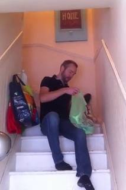
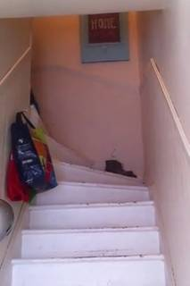
=== Step 0 Execution Feedback === [SUCCESS] Code executed in 29.34s. [Output] [VLM Q | thinking] Identify the objects that the person is moving in this video. Also, describe the location and appearance of the staircase. Be specific about the objects (e.g., 'green plastic bag'). [VLM A | thinking] The person is holding a green plastic bag while sitting on the stairs (frame 2). The staircase is located indoors and consists of white-painted steps with light pink or peach-colored walls. It features white handrails on both sides and a framed sign that says "HOME" on the wall at the top. Several bags, including a blue multi-colored one and a red one, are hanging on the left wall. VLM Answer: The person is holding a green plastic bag while sitting on the stairs (frame 2). The staircase is located indoors and consists of white-painted steps with light pink or peach-colored walls. It features white handrails on both sides and a framed sign that says "HOME" on the wall at the top. Several bags, including a blue multi-colored one and a red one, are hanging on the left wall. [Variables] New/changed: frames_to_inspect: list, len=3 question: str answer: str [Inline Images] 3 image(s) attached below. Labels: frames_to_inspect [Tool Calls] 1 tool/VLM call(s) this step. [show() budget] 247/250 images remaining.
# Segment the green plastic bag and the staircase # Using text prompts for simplicity; if these fail, I'll use VLM grounding + boxes. prompts = ["green plastic bag", "white stairs"] labels = ["green bag", "staircase"] seg = tools.SAM3.segment_video_by_text(prompts, labels=labels) # Programmatic check for mask existence and area for i, label in enumerate(seg.labels): print(f"Checking masks for {label}:") valid_frames = 0 for fi in seg.frame_indices: mask = seg.get_mask(frame=fi, object=i) if mask.sum() > 0: valid_frames += 1 print(f" Object {label} found in {valid_frames}/{seg.num_frames} frames.") # Visual verification of masks on a few frames # Frame 0: Bag might not be there yet, but stairs should be. # Frame 40: Person is sitting with the bag. # Frame 80: Person is moving again. test_frames = [0, 40, 80] # Ensure test frames are within the range of InputImages test_frames = [f for f in test_frames if f < len(InputImages)] vis_list = [] for tf in test_frames: # Find the corresponding absolute frame index in seg.frame_indices # Since InputImages[tf] is used, we need to check the actual frame index abs_fi = InputImages[tf].frame_index if abs_fi in seg.frame_indices: vis_list.append(seg.visualize(abs_fi)) else: print(f" Frame {abs_fi} not in segmentation indices.") show([InputImages[tf] for tf in test_frames] + vis_list)
Checking masks for green bag: Object green bag found in 667/667 frames. Checking masks for staircase: Object staircase found in 0/667 frames. [image: show_0002]
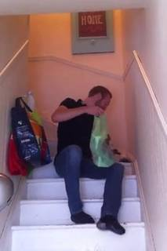
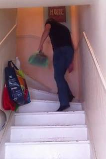
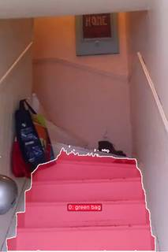
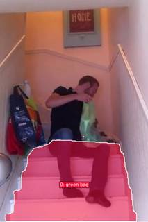
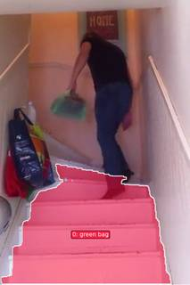
=== Step 1 Execution Feedback === [SUCCESS] Code executed in 52.95s. [Output] Checking masks for green bag: Object green bag found in 667/667 frames. Checking masks for staircase: Object staircase found in 0/667 frames. [Inline Images] 6 image(s) attached below. Labels: [InputImages[tf] for tf in test_frames] + vis_list [Tool Calls] 1 tool/VLM call(s) this step. [show() budget] 241/250 images remaining.
# Select a clear frame for grounding prompt_frame_idx = 40 image = InputImages[prompt_frame_idx] W, H = image.width, image.height # Get bounding boxes from VLM bag_box_norm = vlm.locate(image, "Give the bounding box (x1, y1, x2, y2) in 0-1000 normalized scale for the green plastic bag. Reply with ONLY the numbers.") stairs_box_norm = vlm.locate(image, "Give the bounding box (x1, y1, x2, y2) in 0-1000 normalized scale for the white staircase. Reply with ONLY the numbers.") print(f"Bag box (norm): {bag_box_norm}") print(f"Stairs box (norm): {stairs_box_norm}") # Parse and convert to pixels def parse_box(box_str): return [float(x) for x in box_str.replace('[', '').replace(']', '').replace(',', ' ').split()] bag_box_px = tools.Geometry.normalized_to_pixel(parse_box(bag_box_norm), W, H) stairs_box_px = tools.Geometry.normalized_to_pixel(parse_box(stairs_box_norm), W, H) # Segment video using boxes # Note: prompt_frame_idx in segment_video_by_box is local to the range. # Since we use the whole video, and we chose InputImages[40], we need to find the local index. # InputImages[40] is the 41st image in the list. # However, segment_video_by_box takes the prompt_frame_idx as an index within the video. # Let's use the absolute frame index of InputImages[40]. abs_prompt_fi = image.frame_index # We need to specify the local index within the provided range. # If we don't specify start/end_frame, it's the whole video. # The prompt_frame_idx is the index in the video (0 to total_frames-1). seg = tools.SAM3.segment_video_by_box( boxes=[bag_box_px, stairs_box_px], labels=["green bag", "staircase"], prompt_frame_idx=abs_prompt_fi ) # Programmatic check for i, label in enumerate(seg.labels): print(f"Checking masks for {label}:") valid_frames = 0 for fi in seg.frame_indices: mask = seg.get_mask(frame=fi, object=i) if mask.sum() > 0: valid_frames += 1 print(f" Object {label} found in {valid_frames}/{seg.num_frames} frames.") # Visual verification test_frames = [0, 40, 80] test_frames = [f for f in test_frames if f < len(InputImages)] vis_list = [] for tf in test_frames: abs_fi = InputImages[tf].frame_index if abs_fi in seg.frame_indices: vis_list.append(seg.visualize(abs_fi)) show([InputImages[tf] for tf in test_frames] + vis_list)
[VLM Q | locate] Before answering, first check whether what the question describes is clearly visible in the provided image(s). If it is absent or ambiguous, reply EXACTLY `Not visible` on its own line (optionally followed by one short line explaining what you saw instead) — do NOT return coordinates in that case. Only if the requested target is clearly and unambiguously present, answer the request below. Request: Give the bounding box (x1, y1, x2, y2) in 0-1000 normalized scale for the green plastic bag. Reply with ONLY the numbers. [VLM A | locate] 515 454 684 666 [VLM Q | locate] Before answering, first check whether what the question describes is clearly visible in the provided image(s). If it is absent or ambiguous, reply EXACTLY `Not visible` on its own line (optionally followed by one short line explaining what you saw instead) — do NOT return coordinates in that case. Only if the requested target is clearly and unambiguously present, answer the request below. Request: Give the bounding box (x1, y1, x2, y2) in 0-1000 normalized scale for the white staircase. Reply with ONLY the numbers. [VLM A | locate] 60 640 860 1000 Bag box (norm): 515 454 684 666 Stairs box (norm): 60 640 860 1000 Checking masks for green bag: Object green bag found in 667/667 frames. Checking masks for staircase: Object staircase found in 667/667 frames.
=== Step 2 Execution Feedback === [SUCCESS] Code executed in 94.48s. [Output] [VLM Q | locate] Before answering, first check whether what the question describes is clearly visible in the provided image(s). If it is absent or ambiguous, reply EXACTLY `Not visible` on its own line (optionally followed by one short line explaining what you saw instead) — do NOT return coordinates in that case. Only if the requested target is clearly and unambiguously present, answer the request below. Request: Give the bounding box (x1, y1, x2, y2) in 0-1000 normalized scale for the green plastic bag. Reply with ONLY the numbers. [VLM A | locate] 515 454 684 666 [VLM Q | locate] Before answering, first check whether what the question describes is clearly visible in the provided image(s). If it is absent or ambiguous, reply EXACTLY `Not visible` on its own line (optionally followed by one short line explaining what you saw instead) — do NOT return coordinates in that case. Only if the requested target is clearly and unambiguously present, answer the request below. Request: Give the bounding box (x1, y1, x2, y2) in 0-1000 normalized scale for the white staircase. Reply with ONLY the numbers. [VLM A | locate] 60 640 860 1000 Bag box (norm): 515 454 684 666 Stairs box (norm): 60 640 860 1000 Checking masks for green bag: Object green bag found in 667/667 frames. Checking masks for staircase: Object staircase found in 667/667 frames. [Variables] New/changed: cloudpickle: module requests: module spatial_agent: module frames_to_inspect: list, len=3 question: str answer: str prompts: list, len=2 labels: list, len=2 seg: PerFrameMask, frames=[0..666] (667 frames) i: int label: str valid_frames: int fi: int mask: ndarray, shape=(768, 512), dtype=bool test_frames: list, len=3 vis_list: list, len=3 tf: int abs_fi: int prompt_frame_idx: int image: FrameImage W: int H: int bag_box_norm: str stairs_box_norm: str bag_box_px: list, len=4 stairs_box_px: list, len=4 abs_prompt_fi: int [Inline Images] 6 image(s) attached below. Labels: [InputImages[tf] for tf in test_frames] + vis_list [Tool Calls] 5 tool/VLM call(s) this step. [show() budget] 235/250 images remaining.
# Select a clear frame for grounding prompt_frame_idx = 40 image = InputImages[prompt_frame_idx] W, H = image.width, image.height # Get center points from VLM bag_pt_norm = vlm.locate(image, "Give the (x, y) center coordinates in 0-1000 normalized scale for the green plastic bag. Reply with ONLY the numbers.") stairs_pt_norm = vlm.locate(image, "Give the (x, y) center coordinates in 0-1000 normalized scale for the middle of the white stairs. Reply with ONLY the numbers.") print(f"Bag point (norm): {bag_pt_norm}") print(f"Stairs point (norm): {stairs_pt_norm}") # Parse and convert to pixels def parse_pt(pt_str): return [float(x) for x in pt_str.replace('(', '').replace(')', '').replace('[', '').replace(']', '').replace(',', ' ').split()] bag_pt_px = tools.Geometry.normalized_to_pixel(parse_pt(bag_pt_norm), W, H) stairs_pt_px = tools.Geometry.normalized_to_pixel(parse_pt(stairs_pt_norm), W, H) # Prepare points and labels for SAM3 # points_per_object: list of point lists, e.g. [[[x, y]], [[x, y]]] points_per_object = [[bag_pt_px], [stairs_pt_px]] point_labels_per_object = [[1], [1]] # 1 for foreground labels = ["green bag", "staircase"] # Use absolute frame index for the prompt frame abs_prompt_fi = image.frame_index seg = tools.SAM3.segment_video_by_points( points_per_object=points_per_object, point_labels_per_object=point_labels_per_object, labels=labels, prompt_frame_idx=abs_prompt_fi ) # Programmatic check for i, label in enumerate(seg.labels): print(f"Checking masks for {label}:") valid_frames = 0 for fi in seg.frame_indices: mask = seg.get_mask(frame=fi, object=i) if mask.sum() > 0: valid_frames += 1 print(f" Object {label} found in {valid_frames}/{seg.num_frames} frames.") # Visual verification test_frames = [0, 40, 80] test_frames = [f for f in test_frames if f < len(InputImages)] vis_list = [] for tf in test_frames: abs_fi = InputImages[tf].frame_index if abs_fi in seg.frame_indices: vis_list.append(seg.visualize(abs_fi)) show([InputImages[tf] for tf in test_frames] + vis_list)
[VLM Q | locate] Before answering, first check whether what the question describes is clearly visible in the provided image(s). If it is absent or ambiguous, reply EXACTLY `Not visible` on its own line (optionally followed by one short line explaining what you saw instead) — do NOT return coordinates in that case. Only if the requested target is clearly and unambiguously present, answer the request below. Request: Give the (x, y) center coordinates in 0-1000 normalized scale for the green plastic bag. Reply with ONLY the numbers. [VLM A | locate] 600 558 [VLM Q | locate] Before answering, first check whether what the question describes is clearly visible in the provided image(s). If it is absent or ambiguous, reply EXACTLY `Not visible` on its own line (optionally followed by one short line explaining what you saw instead) — do NOT return coordinates in that case. Only if the requested target is clearly and unambiguously present, answer the request below. Request: Give the (x, y) center coordinates in 0-1000 normalized scale for the middle of the white stairs. Reply with ONLY the numbers. [VLM A | locate] 465 825 Bag point (norm): 600 558 Stairs point (norm): 465 825 Checking masks for green bag: Object green bag found in 667/667 frames. Checking masks for staircase: Object staircase found in 667/667 frames.
=== Step 3 Execution Feedback === [SUCCESS] Code executed in 125.48s. [Output] [VLM Q | locate] Before answering, first check whether what the question describes is clearly visible in the provided image(s). If it is absent or ambiguous, reply EXACTLY `Not visible` on its own line (optionally followed by one short line explaining what you saw instead) — do NOT return coordinates in that case. Only if the requested target is clearly and unambiguously present, answer the request below. Request: Give the (x, y) center coordinates in 0-1000 normalized scale for the green plastic bag. Reply with ONLY the numbers. [VLM A | locate] 600 558 [VLM Q | locate] Before answering, first check whether what the question describes is clearly visible in the provided image(s). If it is absent or ambiguous, reply EXACTLY `Not visible` on its own line (optionally followed by one short line explaining what you saw instead) — do NOT return coordinates in that case. Only if the requested target is clearly and unambiguously present, answer the request below. Request: Give the (x, y) center coordinates in 0-1000 normalized scale for the middle of the white stairs. Reply with ONLY the numbers. [VLM A | locate] 465 825 Bag point (norm): 600 558 Stairs point (norm): 465 825 Checking masks for green bag: Object green bag found in 667/667 frames. Checking masks for staircase: Object staircase found in 667/667 frames. [Variables] New/changed: bag_pt_norm: str stairs_pt_norm: str bag_pt_px: list, len=2 stairs_pt_px: list, len=2 points_per_object: list, len=2 point_labels_per_object: list, len=2 [Inline Images] 6 image(s) attached below. Labels: [InputImages[tf] for tf in test_frames] + vis_list [Tool Calls] 5 tool/VLM call(s) this step. [show() budget] 229/250 images remaining.
# Select a frame where the bag is distinct and the stairs are clear prompt_frame_idx = 60 image = InputImages[prompt_frame_idx] W, H = image.width, image.height # Get tight bounding boxes from VLM # Specifically asking for a "tight" box for the bag to avoid including the person bag_box_norm = vlm.locate(image, "Give a very tight bounding box (x1, y1, x2, y2) in 0-1000 normalized scale for ONLY the green plastic bag. Reply with ONLY the numbers.") stairs_box_norm = vlm.locate(image, "Give a bounding box (x1, y1, x2, y2) in 0-1000 normalized scale that covers the entire visible white staircase. Reply with ONLY the numbers.") print(f"Bag box (norm): {bag_box_norm}") print(f"Stairs box (norm): {stairs_box_norm}") # Parse and convert to pixels def parse_box(box_str): return [float(x) for x in box_str.replace('[', '').replace(']', '').replace(',', ' ').split()] bag_box_px = tools.Geometry.normalized_to_pixel(parse_box(bag_box_norm), W, H) stairs_box_px = tools.Geometry.normalized_to_pixel(parse_box(stairs_box_norm), W, H) # Segment video using boxes abs_prompt_fi = image.frame_index seg = tools.SAM3.segment_video_by_box( boxes=[bag_box_px, stairs_box_px], labels=["green bag", "staircase"], prompt_frame_idx=abs_prompt_fi ) # Visual verification on a few frames test_frames = [0, 40, 60, 80] test_frames = [f for f in test_frames if f < len(InputImages)] vis_list = [] for tf in test_frames: abs_fi = InputImages[tf].frame_index if abs_fi in seg.frame_indices: vis_list.append(seg.visualize(abs_fi)) show([InputImages[tf] for tf in test_frames] + vis_list)
[VLM Q | locate] Before answering, first check whether what the question describes is clearly visible in the provided image(s). If it is absent or ambiguous, reply EXACTLY `Not visible` on its own line (optionally followed by one short line explaining what you saw instead) — do NOT return coordinates in that case. Only if the requested target is clearly and unambiguously present, answer the request below. Request: Give a very tight bounding box (x1, y1, x2, y2) in 0-1000 normalized scale for ONLY the green plastic bag. Reply with ONLY the numbers. [VLM A | locate] 441, 501, 761, 771 [VLM Q | locate] Before answering, first check whether what the question describes is clearly visible in the provided image(s). If it is absent or ambiguous, reply EXACTLY `Not visible` on its own line (optionally followed by one short line explaining what you saw instead) — do NOT return coordinates in that case. Only if the requested target is clearly and unambiguously present, answer the request below. Request: Give a bounding box (x1, y1, x2, y2) in 0-1000 normalized scale that covers the entire visible white staircase. Reply with ONLY the numbers. [VLM A | locate] 60 630 940 1000 Bag box (norm): 441, 501, 761, 771 Stairs box (norm): 60 630 940 1000
=== Step 4 Execution Feedback === [SUCCESS] Code executed in 125.25s. [Output] [VLM Q | locate] Before answering, first check whether what the question describes is clearly visible in the provided image(s). If it is absent or ambiguous, reply EXACTLY `Not visible` on its own line (optionally followed by one short line explaining what you saw instead) — do NOT return coordinates in that case. Only if the requested target is clearly and unambiguously present, answer the request below. Request: Give a very tight bounding box (x1, y1, x2, y2) in 0-1000 normalized scale for ONLY the green plastic bag. Reply with ONLY the numbers. [VLM A | locate] 441, 501, 761, 771 [VLM Q | locate] Before answering, first check whether what the question describes is clearly visible in the provided image(s). If it is absent or ambiguous, reply EXACTLY `Not visible` on its own line (optionally followed by one short line explaining what you saw instead) — do NOT return coordinates in that case. Only if the requested target is clearly and unambiguously present, answer the request below. Request: Give a bounding box (x1, y1, x2, y2) in 0-1000 normalized scale that covers the entire visible white staircase. Reply with ONLY the numbers. [VLM A | locate] 60 630 940 1000 Bag box (norm): 441, 501, 761, 771 Stairs box (norm): 60 630 940 1000 [Variables] New/changed: test_frames: list, len=4 vis_list: list, len=4 [Inline Images] 8 image(s) attached below. Labels: [InputImages[tf] for tf in test_frames] + vis_list [Tool Calls] 5 tool/VLM call(s) this step. [show() budget] 221/250 images remaining.
import numpy as np # 1. Define the North axis # Pick a reference frame (Frame 0) ref_fi = InputImages[0].frame_index cam_pos = recon.extrinsics[ref_fi][:3, 3] # To get a point on the staircase, we can use the VLM to find the center of the stairs in Frame 0 # and then get the 3D point from the reconstruction. stairs_pt_norm = vlm.locate(InputImages[0], "Give the (x, y) center coordinates in 0-1000 normalized scale for the middle of the white stairs. Reply with ONLY the numbers.") # Parse and convert to pixels def parse_pt(pt_str): return [float(x) for x in pt_str.replace('(', '').replace(')', '').replace('[', '').replace(']', '').replace(',', ' ').split()] stairs_px = tools.Geometry.normalized_to_pixel(parse_pt(stairs_pt_norm), InputImages[0].width, InputImages[0].height) # Get 3D point from reconstruction (using the sampled frame index in recon) # Find the index in recon.frame_indices that matches ref_fi recon_idx = recon.frame_indices.index(ref_fi) stair_3d = recon.points.points[recon_idx][int(stairs_px[1]), int(stairs_px[0])] # North vector: Staircase -> Camera north_vec = cam_pos - stair_3d north_vec = north_vec / np.linalg.norm(north_vec) # East vector: North x Up up_vec = np.array([0, 1, 0]) east_vec = np.cross(north_vec, up_vec) east_vec = east_vec / np.linalg.norm(east_vec) print(f"North Vector: {north_vec}") print(f"East Vector: {east_vec}") # 2. Sample bag positions at key frames # We'll use frames where the bag is clearly visible and at different stages sample_indices = [0, 15, 40, 75, 94] bag_positions = [] for idx in sample_indices: img = InputImages[idx] fi = img.frame_index # Find the frame index in recon if fi not in recon.frame_indices: # Find nearest recon_idx = min(range(len(recon.frame_indices)), key=lambda i: abs(recon.frame_indices[i] - fi)) else: recon_idx = recon.frame_indices.index(fi) # Get bag center coord_str = vlm.locate(img, "Give the (x, y) center coordinates in 0-1000 normalized scale for the green plastic bag. Reply with ONLY the numbers.") if "Not visible" in coord_str: print(f"Frame {fi}: Bag not visible") bag_positions.append(None) continue px = tools.Geometry.normalized_to_pixel(parse_pt(coord_str), img.width, img.height) pos_3d = recon.points.points[recon_idx][int(px[1]), int(px[0])] bag_positions.append(pos_3d) print(f"Frame {fi} Bag Pos: {pos_3d}") # 3. Analyze displacements # Filter out None values valid_pos = [p for p in bag_positions if p is not None] valid_indices = [i for i, p in enumerate(bag_positions) if p is not None] if len(valid_pos) >= 3: # Displacement 1: Start -> Bottom d1 = valid_pos[1] - valid_pos[0] proj_n1 = np.dot(d1, north_vec) print(f"Movement 1 North Projection: {proj_n1:.3f} ({'North' if proj_n1 > 0 else 'South'})") # Displacement 2: Bottom -> Top # Find the transition from bottom to top (e.g., from index 1 to 3 or 4) d2 = valid_pos[-2] - valid_pos[1] # Bottom to near-end proj_n2 = np.dot(d2, north_vec) print(f"Movement 2 North Projection: {proj_n2:.3f} ({'North' if proj_n2 > 0 else 'South'})") # Displacement 3: Top -> Final d3 = valid_pos[-1] - valid_pos[-2] proj_n3 = np.dot(d3, north_vec) proj_e3 = np.dot(d3, east_vec) print(f"Movement 3 North Projection: {proj_n3:.3f}, East Projection: {proj_e3:.3f} ({'East' if proj_e3 > 0 else 'West'})") else: print("Not enough valid positions to analyze trajectory.")
[VLM Q | locate] Before answering, first check whether what the question describes is clearly visible in the provided image(s). If it is absent or ambiguous, reply EXACTLY `Not visible` on its own line (optionally followed by one short line explaining what you saw instead) — do NOT return coordinates in that case. Only if the requested target is clearly and unambiguously present, answer the request below. Request: Give the (x, y) center coordinates in 0-1000 normalized scale for the middle of the white stairs. Reply with ONLY the numbers. [VLM A | locate] 500 775 North Vector: [2.52912577e-08 1.99708856e-01 9.79855282e-01] East Vector: [-1.00000000e+00 0.00000000e+00 2.58112174e-08] [VLM Q | locate] Before answering, first check whether what the question describes is clearly visible in the provided image(s). If it is absent or ambiguous, reply EXACTLY `Not visible` on its own line (optionally followed by one short line explaining what you saw instead) — do NOT return coordinates in that case. Only if the requested target is clearly and unambiguously present, answer the request below. Request: Give the (x, y) center coordinates in 0-1000 normalized scale for the green plastic bag. Reply with ONLY the numbers. [VLM A | locate] 200 545 Frame 0 Bag Pos: [-0.3488108 0.6492406 -2.344051 ] [VLM Q | locate] Before answering, first check whether what the question describes is clearly visible in the provided image(s). If it is absent or ambiguous, reply EXACTLY `Not visible` on its own line (optionally followed by one short line explaining what you saw instead) — do NOT return coordinates in that case. Only if the requested target is clearly and unambiguously present, answer the request below. Request: Give the (x, y) center coordinates in 0-1000 normalized scale for the green plastic bag. Reply with ONLY the numbers. [VLM A | locate] 320 370 Frame 15 Bag Pos: [-0.18988638 1.0158672 -2.5169325 ] [VLM Q | locate] Before answering, first check whether what the question
=== Step 6 Execution Feedback === [SUCCESS] Code executed in 114.61s. [Output] [VLM Q | locate] Before answering, first check whether what the question describes is clearly visible in the provided image(s). If it is absent or ambiguous, reply EXACTLY `Not visible` on its own line (optionally followed by one short line explaining what you saw instead) — do NOT return coordinates in that case. Only if the requested target is clearly and unambiguously present, answer the request below. Request: Give the (x, y) center coordinates in 0-1000 normalized scale for the middle of the white stairs. Reply with ONLY the numbers. [VLM A | locate] 500 775 North Vector: [2.52912577e-08 1.99708856e-01 9.79855282e-01] East Vector: [-1.00000000e+00 0.00000000e+00 2.58112174e-08] [VLM Q | locate] Before answering, first check whether what the question describes is clearly visible in the provided image(s). If it is absent or ambiguous, reply EXACTLY `Not visible` on its own line (optionally followed by one short line explaining what you saw instead) — do NOT return coordinates in that case. Only if the requested target is clearly and unambiguously present, answer the request below. Request: Give the (x, y) center coordinates in 0-1000 normalized scale for the green plastic bag. Reply with ONLY the numbers. [VLM A | locate] 200 545 Frame 0 Bag Pos: [-0.3488108 0.6492406 -2.344051 ] [VLM Q | locate] Before answering, first check whether what the question describes is clearly visible in the provided image(s). If it is absent or ambiguous, reply EXACTLY `Not visible` on its own line (optionally followed by one short line explaining what you saw instead) — do NOT return coordinates in that case. Only if the requested target is clearly and unambiguously present, answer the request below. Request: Give the (x, y) center coordinates in 0-1000 normalized scale for the green plastic bag. Reply with ONLY the numbers. [VLM A | locate] 320 370 Frame 15 Bag Pos: [-0.18988638 1.0158672 -2.5169325 ] [VLM Q | locate] Before answering, first check whether what the question describes is clearly visible in the provided image(s). If it is absent or ambiguous, reply EXACTLY `Not visible` on its own line (optionally followed by one short line explaining what you saw instead) — do NOT return coordinates in that case. Only if the requested target is clearly and unambiguously present, answer the request below. Request: Give the (x, y) center coordinates in 0-1000 normalized scale for the green plastic bag. Reply with ONLY the numbers. [VLM A | locate] 604 559 Frame 40 Bag Pos: [ 0.14010625 0.6214976 -2.2287593 ] [VLM Q | locate] Before answering, first check whether what the question describes is clearly visible in the provided image(s). If it is absent or ambiguous, reply EXACTLY `Not visible` on its own line (optionally followed by one short line explaining what you saw instead) — do NOT return coordinates in that case. Only if the requested target is clearly and unambiguously
ReturnAnswer("A")
[ReturnAnswer] Answer submitted: A